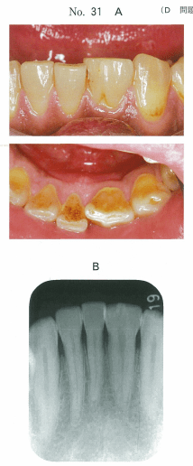

象牙質が露出し、象牙細管が開口することで、外来刺激（冷水、擦過など）により一過性の疼痛が生じる状態。
外来刺激により象牙細管内の組織液が移動し、歯髄内の神経終末が興奮して痛みを感じる。
侵襲の少ない方法から段階的に行う。
| 段階 | 処置内容 |
|---|---|
| 1 | 初期治療による再石灰化促進（口腔衛生指導、知覚過敏用歯磨剤） |
| 2 | 象牙細管開口部の積極的閉鎖（薬物塗布） |
| 3 | 歯髄知覚神経の鈍麻（レーザー照射） |
| 4 | 形成と修復（CR修復、咬合調整） |
| 5 | 抜髄（最終手段） |
| 薬剤 | 作用機序 |
|---|---|
| フッ化ナトリウム | フッ化カルシウム沈着による閉鎖 |
| 塩化ストロンチウム | 象牙細管閉鎖 |
| シュウ酸塩 | シュウ酸カルシウム結晶による閉鎖 |
| 乳酸アルミニウム | 象牙細管閉鎖 |
| グルタールアルデヒド | タンパク凝固による閉鎖 |
| フッ化ジアミン銀 | 象牙細管閉鎖（着色あり） |
| 薬剤 | 作用機序 |
|---|---|
| 硝酸カリウム | K⁺イオンが神経の脱分極を抑制 |
カリウムイオンが歯髄神経の脱分極を抑制し、痛みの伝達をブロックする。知覚過敏用歯磨剤に配合されている。
象牙質知覚過敏症は一過性の誘発痛で、自発痛はない。
象牙質知覚過敏症に用いるのはどれか。1つ選べ。
【解説】
47歳の男性。下顎左側融合歯の疼痛を主訴として来院した。半年前から冷気に痛みを覚えるという。初診時の口腔内写真（別冊No.31A）とエックス線写真（別冊No.31B）とを別に示す。
まず行うのはどれか。1つ選べ。

【解説】冷気による一過性の痛み → 象牙質知覚過敏症を疑う。